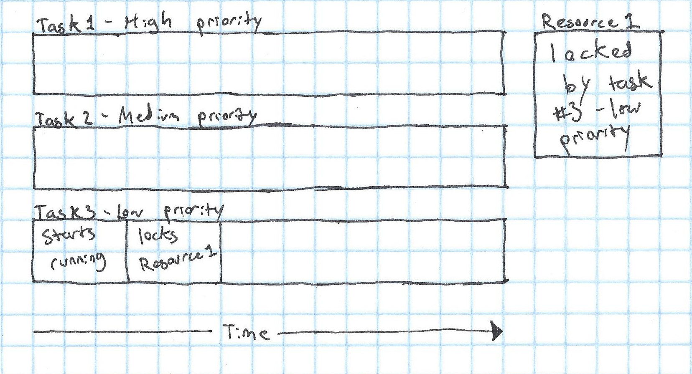
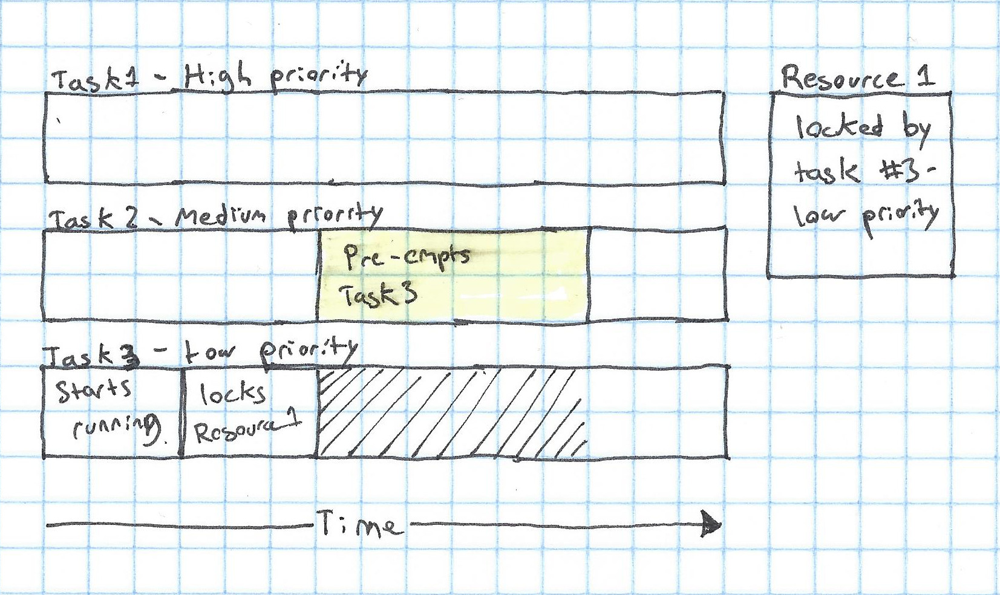
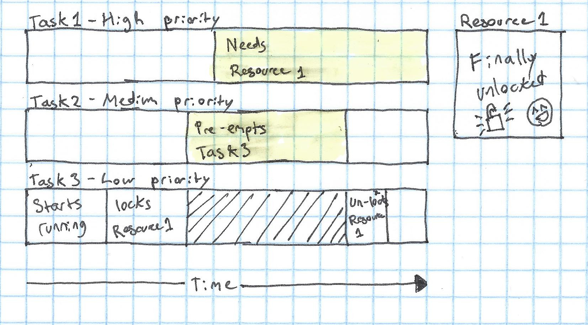

When I'm programming robots, something that often comes up is "realtime" code. What does code being realtime mean? Simply put, realtime code has a known upper bound on the amount of time that it can take to execute. That rules out quite a few things:
- Any operation involving the network
- Any operation involving reading or writing files
- Any operation that allocates memory
And those are just a few of the things that will make code non realtime.
We use Linux for our code, so we end up using what's called the RT-PREEMPT patch. This makes it possible for userspace programs to be realtime in Linux. The main thing that this changes is Linux's schedluer. The scheduler's job is to choose when to run which thread, and which program. In order to figure out why RT-PREEMPT changes the scheduler, let's look at how Linux's default scheduler compares to the RT-PREEMPT scheduler:
Default (CFS):
- Prioritizes giving all tasks equal run time
- Runs in O(log N) time, where N is the number of tasks
- No task is higher priority than another
RT-PREEMPT:
- Prioritizes running higher-priority tasks first
- All realtime tasks have a priority
- High-priority tasks can "pre-empt" lower priority tasks and run instead of them
As you can tell, CFS focuses on more general systems, while RT-PREEMPT focuses on letting specific tasks meet strict timing requirements. This is important, for example, when we have a thread that runs a controller for a robot, which we need to run at exactly 200Hz.
However, there are a few problems that can come with this scheduling system. The main problem is priority inversion. To give an example of priority inversion, let's consider a simple pre-emptive scheduler:
- Every task has a priority
- A high priority task can choose to "pre-empt" a lower priority task, and run instead of it
- If a task needs a resource that only one task can access at a time, it will lock it with a mutex, so no other task can use it
Now, let's imagine how a system that uses this scheduler could go wrong.
We'll have three tasks: one high priority task, one medium priority task, and one low priority task. We also have one shared resource, which can only be used by one task at a time:

Next, Task 3, which is low priority, will start to run and will acquire a lock on Resource 1, meaning that no other tasks can use it:

Next, Task 2, which is medium priority enters a section of the code that needs to be realtime (called a critical section). This pre-empts Task 1, but Task 1 still has a lock on the resource.

Now, Task 1 - the highest priority task in the system - enters a critical section which needs to use the resource. It can't use the resource, because Task 1 has a lock on the resource, and it can't pre-empt other tasks, because it needs the resource to run it's code! Task 3, the task that has the lock, can't do anything about this though, because it's being pre-empted by Task 2 😢

Finally, once Task 2 is done doing it's thing, Task 1 can resume running and finish with the resource:

And Task 1 can finally have the resource and run:

So that's how a high priority task can be blocked by a lower priority task that doesn't need a resource. This is one of the main problems with the scheduler that I've described (called "Fixed priority pre-emptive scheduling").
So how do you fix this problem?
As it turns out, it's fairly simple - in order to release the lock, our low priority task has to have at least the same priority as the medium priority task that's pre-empting it. The way that the RT-PREEMPT Linux patch does this is by setting the priority of a task that has a lock on a resource to the priority of the highest-priority task that's waiting for that resource. In our example, that would mean that as soon as Task 1 wanted the resource, Task 3 would be set to high priority, and pre-empt Task 2, allowing it to finish with the resource and allow Task 1 to run as soon as possible.
This is a easy solution that will fix the priority inversion issue!
I hope that this has been a good intro to what priority inversion is, why it's a problem, and how to it's fixed. It definitely gave me some ideas as to things that I could research in the future:
- How does CFS work?
- How does the RT-PREEMPT scheduler work (in more detail)?
- Are there other ways to fix priority inversion?
All could be good topics for a future post.
Anyway, that's all for now!